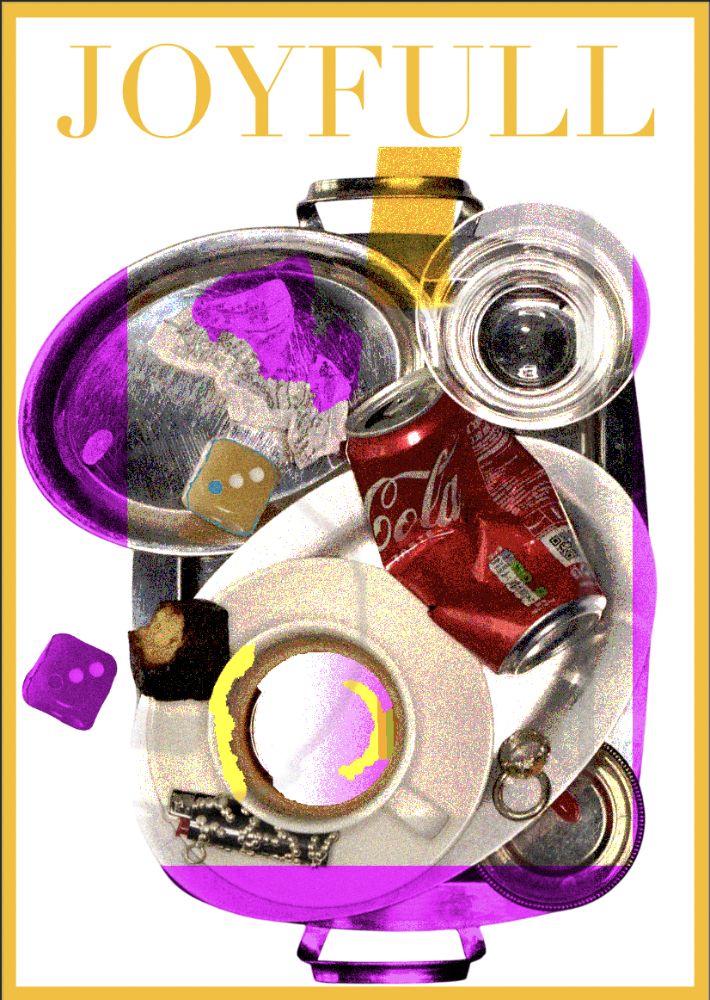
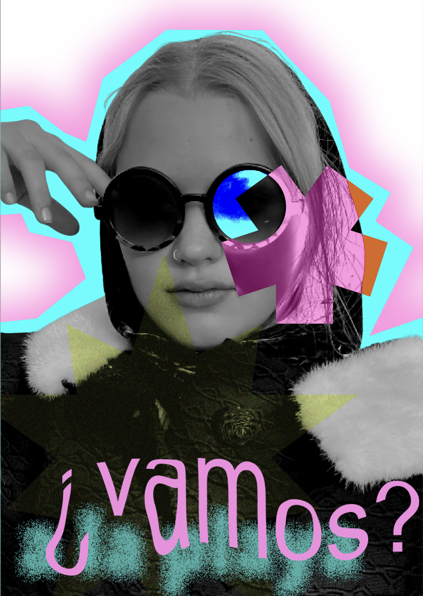
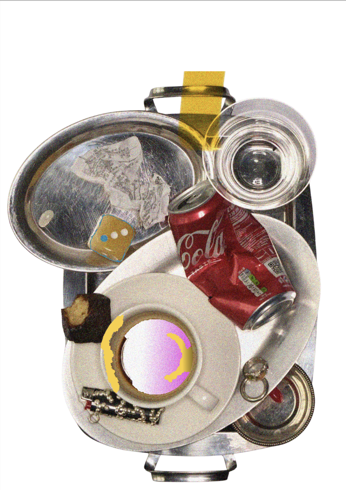
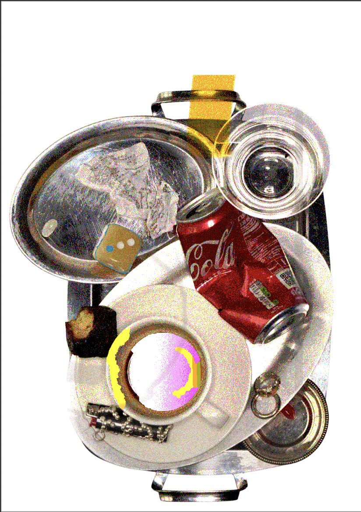
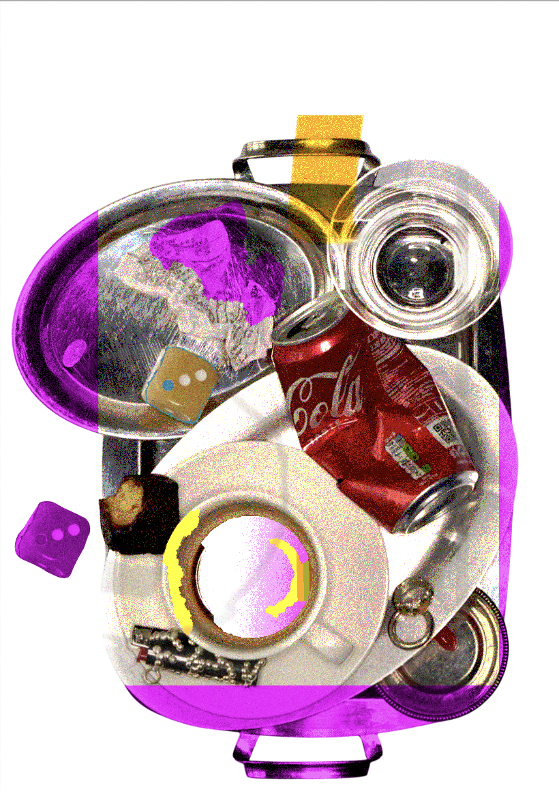
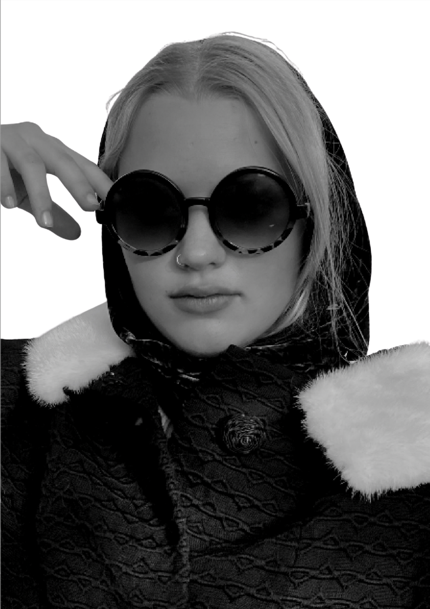
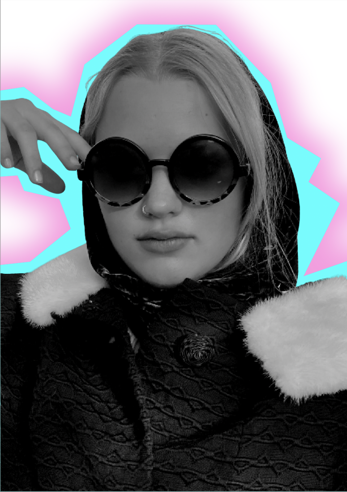
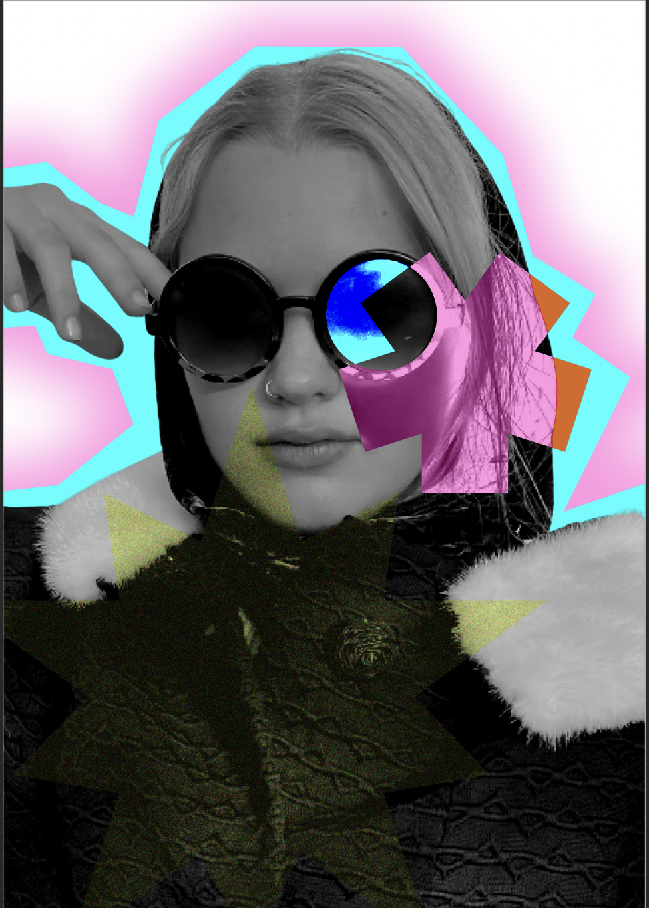

Affinity Design Projekte & kreative Prozesse



Step 1

Step 2

Step 3
Step 4

Step 1

Step 2

Step 3
Step 4
Dieses Werk entstand aus einer ersten Skizze, bei der Komposition und Aufbau festgelegt wurden. In Affinity wurde das Design digital ausgearbeitet, Farben gezielt eingesetzt und Details verfeinert, bis ein klares und ausbalanciertes Ergebnis entstand.
Der zweite Entwurf entwickelte sich aus experimentellen Formen. Schritt für Schritt wurden Proportionen, Farben und Ebenen angepasst, sodass ein stimmiges Gesamtbild mit klarer visueller Struktur entstand.